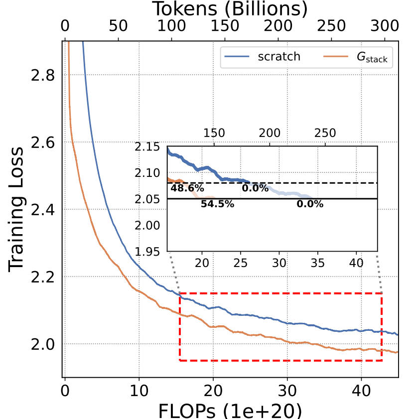

3B
Training 3B LLMs with 300B tokens. $G_\text{stack}$ significantly outperforms scratch in loss.

LLMs are computationally expensive to pre-train due to their large scale. Model growth emerges as a promising approach by leveraging smaller models to accelerate the training of larger ones. However, the viability of these model growth methods in efficient LLM pre-training remains underexplored. This work identifies three critical \(\underline{\textit{O}}\)bstacles: (\(\textit{O}\)1) lack of comprehensive evaluation, (\(\textit{O}\)2) untested viability for scaling, and (\(\textit{O}\)3) lack of empirical guidelines. To tackle \(\textit{O}\)1, we summarize existing approaches into four atomic growth operators and systematically evaluate them in a standardized LLM pre-training setting. Our findings reveal that a depthwise stacking operator, called \(G_{\text{stack}}\), exhibits remarkable acceleration in training, leading to decreased loss and improved overall performance on eight standard NLP benchmarks compared to strong baselines. Motivated by these promising results, we conduct extensive experiments to delve deeper into \(G_{\text{stack}}\) to address \(\textit{O}\)2 and \(\textit{O}\)3. For \(\textit{O}\)2 (untested scalability), our study shows that \(G_{\text{stack}}\) is scalable and consistently performs well, with experiments up to 7B LLMs after growth and pre-training LLMs with 750B tokens. For example, compared to a conventionally trained 7B model using 300B tokens, our \(G_{\text{stack}}\) model converges to the same loss with 194B tokens, resulting in a 54.6% speedup. We further address \(\textit{O}\)3 (lack of empirical guidelines) by formalizing guidelines to determine growth timing and growth factor for \(G_{\text{stack}}\), making it practical in general LLM pre-training. We also provide in-depth discussions and comprehensive ablation studies of \(G_{\text{stack}}\).
We summarize four $\textbf{atomic growth operators}$: $\textbf{(A)}$ directly duplicating and stacking old layers in a depthwise manner or splitting neurons in the same layer widthwisely, denoted as $G_\text{direct}$, $\textbf{(B)}$ generating expanded parameters using a learnable mapping matrix to the existing parameters, denoted as $G_{\text{learn}}$, $\textbf{(C)}$ setting the new parameters to zero, denoted as $G_{\text{zero}}$, and $\textbf{(D)}$ randomly initializing the new parameters, denoted as $G_{\text{random}}$. :
The simplified illustration of four growth operators $G_{\text{direct}}$, $G_{\text{learn}}$, $G_{\text{zero}}$ and $G_{\text{random}}$, each of which can grow along widthwise (intra-layer) $G^{\to}$ or depthwise (layer-wise) $G^{\uparrow}$. Except $G_{\text{direct}}$, other three operators only illustrates the widthwise growth.
We evaluate operators using training loss and Lambada, ARC-c, ARC-e, Logiqa, PIQA, Sciq, Winogrande and Wikitext PPL totaling eight standard NLP benchmarks. After $8 \times 10^{20}$ FLOPs of training, $G_{\text{direct}}^\uparrow$ demonstrates a significant speedup.
Training 3B LLMs with 300B tokens. $G_\text{stack}$ significantly outperforms scratch in loss.
Training 7B LLMs with 300B tokens. $G_\text{stack}$ significantly outperforms scratch in loss.
@article{du2024stacking,
title={Stacking Your Transformers: A Closer Look at Model Growth for Efficient LLM Pre-Training},
author={Du, Wenyu and Luo, Tongxu and Qiu, Zihan and Huang, Zeyu and Shen, Yikang and Cheng, Reynold and Guo, Yike and Fu, Jie},
journal={arXiv preprint},
year={2024}
}
This website is adapted from Nerfies, licensed under a Creative Commons Attribution-ShareAlike 4.0 International License.